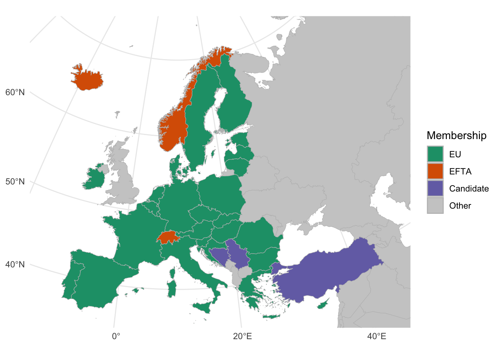
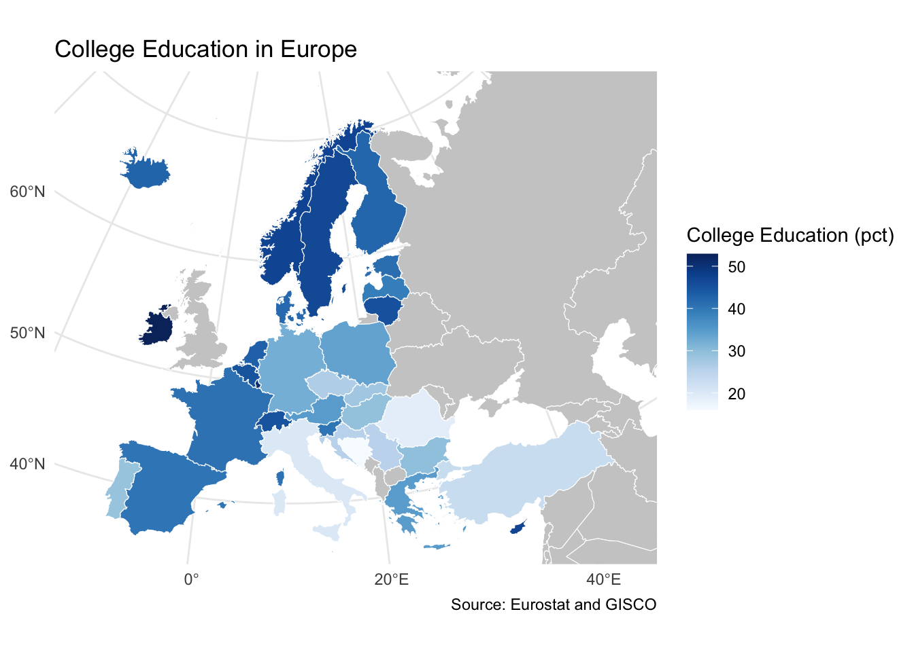

Making quarto documents look better
We’ve been working with Quarto documents and their associated R code chunks all semester. The documents we’ve created have been a bit messy, but we can also produce final documents that look much better. So, we’ll take a look at some of the options.
YAML and Types of Documents
You’ve already seen that we can produce several kinds of documents with Quarto. We’ve produced pdf and html documents as well as slides. We can also produce Word documents, PowerPoint slide decks and pdf slides. The way that you tell Quarto what kind of document you want is by using the YAML header at the top of the document. By changing what comes after the ‘format’ line in the YAML header, you can change the kind of document that Quarto produces. docx produce a word document, pptx produces a PowerPoint slide deck, and pdf produces a pdf document. For presentations, you can use ioslides, beamer, pptx, or revealjs to make html slides. It is usually better to draft your work using html or revealjs because they render faster, but you can switch to one of the other formats later. Once you generate your pptx or docx, you can then edit them in Powerpoint or Word. Just be sure to save them under a different name so that you don’t overwrite them when you render your document again.
Markdown formatting
Markdown is a simple way to format text. You can use it to create headers, lists, and links. You can also use it to create tables and to format text. For example, you can make text bold or italic.
You can make bulleted lists.
Just make sure to leave a space between each item.
You can make numbered lists.
They also need a space.
Chunk Options
You may have noticed #| include: false or #| echo: false in some of the code chunks. These are chunk options that tell Quarto whether or not to include the code or the results in the final document. #| echo: false will hide your code from the final document but keep the results.#| echo: true will show the code and the results. #| include: false will hide both the code and the results, including warnings. In both of these cases, the code is still run, it just may not be shown if set to false. For example, you probably don’t want to show the code that you used to load the libraries, and in a final document, you wouldn’t the information printed by the library commands either. So, you’d use #| include: false to hide that information.
You can also use #| eval: false to tell Quarto not to run the code. This can be useful if you want to show the code that you used to generate a plot, but you don’t want to show the plot itself. You also might use this if you’ve created a plot, but that you don’t want to use that plot for the final document. However, you don’t want to delete the code.
We can make headings
And subheadings
And subsubheadings
There is also integration with Zotero through RStudio. This allows you to insert citations from your Zotero library of sources and then automatically cite them in your work. (Limani 2023; Paxton and Kunovich 2003; Hulsey 2010; Mujkic 2008)
Usually, in our final documents, we only want to show figures and tables that we have formatted with kable to make them look nice.
Figures
In our figures, we can either have the titles and captions in the text, in the options for the code chunk directly built into the figure. If we put them in the code chunk, we can use the fig.cap option to specify the caption. Here is an example where the title is just a heading in the text and the caption is written using fig.cap in the code chunk.
European Countries’ Relationship to the EU
Alternatively, we put the title and the caption in the labels for the image.

The advantage to to putting the title and caption outside of the figure itself is that it is easier to adapt the formatting to the rest of your document, particularly if you are saving it as a word document and are going to finalize formatting there. The advantage to putting the title and caption in the figure itself is that, when someone copies and pastes from your website or document, the title and caption will be included.
Tables
Remember that we can also make summary tables and use the kable package to better format those tables.
| Cold War Status | College Education (pct) |
|---|---|
| Former NATO Countries | 38.3 |
| Former Warsaw Pact Countries | 32.4 |
| Neutral Countries | 42.2 |
| Former Countries of Yugoslavia | 26.8 |
References
Hulsey, John W. 2010. “‘Why Did They Vote for Those Guys Again?’ Challenges and Contradictions in the Promotion of Political Moderation in Post-War Bosnia and Herzegovina.” Democratization 17 (6): 1132. http://www.informaworld.com/10.1080/13510347.2010.520552.
Limani, Merita. 2023. “Women’s Political Participation: A Comparative Study of Gender Quota Implementation in Six Western Balkan Countries.” Journal of Social and Educational Research 2 (2). https://doi.org/10.5281/zenodo.10440926.
Mujkic, Asim. 2008. We, the Citizens of Ethnopolis. Centar za ljudska prava Univerziteta.
Paxton, Pamela, and Sheri Kunovich. 2003. “Women’s Political Representation: The Importance of Ideology.” Social Forces 82 (1): 87–113. https://www.jstor.org/stable/3598139.